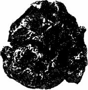

Что такое серебро и его свойства

" Очерк о серебре. "
А также из других источников Интернет
Уважаемый Читатель - после ознакомления с Книгой
рекомендую Вам заказать ее бумажное издание.
В «Очерке о серебре» дана история открытия месторождений серебра, показаны условия их эксплуатации, рассказано о чеканке монет из серебра, которое дали конкретные месторождения и рудники. Тем самым в книге показано, как на стыке монетного производства, учения о рудных месторождениях, истории горного дела и политэкономии возникли основы нового минерально — сырьевого направления в нумизматике.
Книга иллюстрирована монетами и опирается на литературные источники. Следовательно, она начинается со времени появления писаной истории и чеканки монет. «Нитью Ариадны» в изложении являются монеты, и по ним уже анализируются литературные данные о месторождениях, рудниках, районах добычи серебра и другие исторические сведения, Вместе с тем связать монеты с источниками сырья оказывалось невозможным в тех случаях, когда в государствах происходили переходы к единой централизованной чеканке монет, ликвидировались мелкие монетные дворы на рудниках и прекращалась, а чеканка на самой монете упоминаний о происхождении ее серебра.
При сборе материала автору, к сожалению, пока не удалось выявить литературные материалы и монеты с известным происхождением серебра по странам Востока — Индии, Китаю, Японии и т. д.
Не привязываются к конкретным месторождениям серебра монеты США и некоторых других стран. Однако «детективный» поиск в избранном направлении может продолжаться с тем, чтобы найти новые интересные детализирующие данные, выявить разновидности античных и средневековых монет, дополнительно истолковать замысловатые сюжеты монет, например, века Просвещения, а также исправить возможные неточности в старых литературных данных. В то же время, говоря словами академика В.И.Вернадского, в ходе подготовки этого издания книги приходилось «вновь находить забытых исследователей и забытые работы», в частности, в «Горном журнале» прошлого века.
В этом, третьем издании книги приведены подробные материалы по месторождениям серебряных руд: Шнееберг, Ильменау, Гольцапфель — в Германии, Рио Тинто — в Испании, Копиапо и др. — в Чили, Шель-джа — в Средней Азии. Существенно переработан и дополнен текст и даны новые иллюстрации по месторождениям Германии, Австрии, Чехословакии, Польши, Венгрии, Трансильвании, Норвегии, Швеции и Мексики.
В книге приведены высказывания К. Маркса о деньгах, монетах, о месторождениях металла, использованного для их чеканки.
Идея провести исследования на стыке нумизматики и горнорудного дела была высказана в «Главе о деньгах» К. Марксом, которого очень заинтересовала история развития добычи золота и серебра:
«c) Теперь следует рассмотреть источники получения золота и серебра и связь их с историческим развитием.
b) Деньги как монета. Краткие исторические данные о монетах. Понижение и повышение их достоинства и т. д.».
«В виде особых разделов надо добавить:
1) Деньги как монета. Весьма кратко о монетном деле.
2) Исторические данные об источниках добывания золота и серебра. Открытие их и т. д. История их добывания.
3) Причины изменений стоимости благородных металлов, а поэтому и металлических денег…»[1].
Позднее К. Маркс отказался от подробной разработки вопроса истории открытия и эксплуатации место» рождений золота и серебра. Но в намеченной К. Марксом очень интересной теме выявилась возможность выделить разделы, исследование которых, казалось бы, было по силам геологу нумизмату-любителю, тем более что в «Главе о деньгах» собран и пред-ставлен читателю исключительно богатый материал, который определил и направление, и существо изложения.
В «Очерке о серебре» по возможности последовательно описаны важнейшие этапы и эпизоды процесса развития серебряного монетного обращения в разных странах, протекавшего на фоне имевших там место открытий месторождений. Выделенные разделы неодинаковы по объему и по существу содержания, так как о разных периодах развития и о разных районах в литературных трудах, памятниках письменности и материальной культуры сохранился неодинаковый материал.
Отечественные памятники письменности, литературные научные труды русских авторов заключают наиболее обстоятельные данные именно о серебре и о золоте, их месторождениях, истории открытия, развитии в них добычи, геологических особенностях и т. д.
Серебро и золото, будучи основными для чеканки русских монет металлами, строго учитывались на всех стадиях добычи и переработки, многие данные о них фиксировались в документах горнорудных предприятий и учреждений, монетных дворов. А сами монеты позволяют установить время и место их выпуска, а иногда и место добычи того металла, из которого они отчеканены.
Большой объем чеканки серебряных монет каким-либо государством обычно свидетельствует о наличии в этом государстве своих месторождений серебра или о его широких торговых связях. Увеличение чеканки и ввод в обращение новых типов серебряных монет при одном и том же царствовании или правлении в большинстве случаев свидетельствует о начале эксплуатации или открытии новых месторождений серебра.
И еще одно обстоятельство надо иметь в виду: чеканка зарубежных монет нередко носила не экономический, а политический характер.
Разработанная В. И. Вернадским теория образования руд со вторичным самородным серебром помогла объяснить появление ряда монет XVII — XVIII вв. с сюжетами из горнорудного дела или надписями о происхождении серебра, чеканенных в мелких германских государствах очень ограниченными тиражами — своего рода «нумизматических комет», промелькнувших в денежном обращении.
Старые серебряные монеты поступали и сохранились в коллекциях, как правило, из захоронений: кладов, могил, случайных потерь монет и т. п. и с тех пор переходят по нумизматической эстафете из рук в руки. Вновь выявляемые клады являются достоянием государства и, в первую очередь, музеев.
«Извлечение денег из потока обращения и предохранение их от общественного обмена веществ проявляется также внешним образом в закапывании денег в землю…»[2], — пишет К. Маркс. Сознательный клад можег быть «краткосрочным», когда намеревались спрятать на короткое время монеты, имевшиеся в наличии. Другой тип сознательного клада — клад «скопидомский»: в нем бывает больше монет, а монеты подбираются полновесные, не стертые, без каких-либо изъянов. К. Маркс отмечает: «золото или серебро, приведенные таким образом в виде денег в неподвижное состояние, суть сокровище»[3]. Собиратель сокровищ накапливал именно новенькие полновесные, т. е. не стертые, монеты. Это особенно важно для экземпляра, попадающего в коллекцию, так как дает возможность прочесть все надписи и изображения.
«Собиратель сокровищ презирает светские, временные и преходящие наслаждения, гоняясь за вечным сокровищем, которого не ест ни тля, ни ржа, которое является всецело небесным и в то же время всецело земным»[4]. Элементы этой характеристики в некоторой степени можно отнести и к собирателю нумизматической коллекции — увлеченному энтузиасту. Все коллекции старых музеев в основе состоят из частных коллекций, которые на протяжении многих лет создавались кропотливым трудом людей, «гонявшихся» за своеобразным «сокровищем», каким является редкая или просто нужная для коллекции монета, Безусловно, между собирателями есть огромная принципиальная разница: собиратель сокровища видит золото и серебро, а монета лишь помогает ему вести счет сокровища; собиратель же нумизматической коллекции видит прежде всего монету, а металл, из которого она отчеканена, фиксирует лишь в качестве одного из элементов характеристики монеты.
НЕКОТОРЫЕ СВОЙСТВА СЕРЕБРАСеребро как драгоценный металл считалось «вторым высоким металлом». М. В. Ломоносов так описал его свойства: «Второй высокий металл называется серебро. Сие от золота разнится больше цветом и тягостию. Цвет его толь бел, что ежели серебро совсем чисто и только после плавления вы — лито, а не полировано, то кажется оно издали бело, как мел. Весу его пропорция к воде как 10535 к 1000,то-есть около десяти раз оной тяжелее, а золота почти вдвое легче. Однако протчими свойствами золоту едва уступает… В земле находится оно часто очень чисто, а больше в листках или волосам подобно тонкой и кудрявой проволоке, а иногда в нарочито великих глыбах. В Академиче — ской Минеральной камере есть самородного чистого серебра кус весом 7 фунтов. Самое чистое серебро имеет почти всегда в себе немного золота». Этот упомянутый М. В. Ломоносовым «кус серебра» показан на рис. 1. В настоящее время свойства серебра изучены очень подробно. Из свойств, которые сделали его важным сырьем для чеканки монет, отметим следующие. В первую очередь — благородство: неокисляемостъ в обычных условиях, красивый бе лый цвет и блеск при полировке; затем — высокую плотность (10,49), сравнительно низкую (960,5° С) температуру плавления, небольшую твердость (по шкале Mo-оса 2, 7), высокую ковкость (из серебра можно выливать пластинки толщиной до 0,00025 мм, причем из 1 г вытягивается проволока длиной 1800 м).

Рис. 1. Самородок, найденный в 1732 г. на Медвежьем острове (1/2 натур. вел.)
В природе серебро встречается в самородном виде и в виде соединений, иногда в виде природного сплава с золотом (электрум) и редко в виде амальгамы. Показательно, что не образуется в природе окислов серебра, его гидратов и солей, характерных для свинца и цинка, а обычно встречаются соединения серебра в зоне выветривания месторождений. Главными минералами серебряных руд являются самородное серебро, аргентит, пираргирит, полибазит, прустит, стефанит и серебросодержащий галенит.
Самородное серебро имеет кубическую кристаллическую решетку, но в виде многогранников встречается редко: наиболее часты вытянутые кристаллы, имеющие вид тонких нитей до 25 см длиной, которые обычно скручены. И мельчайшие самородки, и огромные пластины серебра в общем представляют сростки кристаллов. Наблюдаются дендриты, двойниковые срастания, губчатые массы.
В прошлом самородное серебро играло значительную роль. По происхождению самородное серебро В. И. Вернадский разделяет на первичное и вторичное.
Месторождений первичного самородного серебра известно немного. Из старых по времени открытия месторождений (в 1623 г.) крупнейшим является Конгсберг в Норвегии. Более распространен и лучше изучен тип месторождений со вторичным серебром. Самородное серебро в этом случае находится в теснейшей связи с другими соединениями серебра и происходит за счет их разложения при участии воздуха и воды. Исходными соединениями для такого серебра являются сульфосоли и сернистые соединения, реже электрум и некоторые другие минералы, В верхних частях месторождений все соединения серебра в конечном счете образуют три типа минералов: самородное серебро, сернистое серебро и галоидные соединения серебра. Эти минералы иногда находятся между собой в состоянии равновесия, но в конце-концов преобладает самородное серебро. «Серебро при этом переносится в растворах, — писал В. И. Вернадский, — далеко от мест нахождения своих первичных соединений; так, во Фрейберге оно в виде „налетов“ (цементного серебра) находится в верхних частях жил, в окружающих их породах, проникая в них по трещинам». Эти слова интересны тем, что показывают, насколько правильно понимал процессы в верхних частях жильных месторождений (в том же Фрейберге) М. В. Ломоносов, первый из русских ученых писавший об этом. Так, атмосферным осадкам он отводит следующую роль:
«Между тем дождевая вода сквозь внутренности горы процеживается и распущенные в ней минералы несет с собою и в оные расселины выжиманием или капанием вступает; каменную материю в них оставляет таким количеством, что в несколько времени наполняет все оные полости». Зона же выщелачивания охарактеризована такими образными словами: «Нередко случается, что руды еще в земле… в прах обращаются, из которого после не получают плавлением больше никакого металла. Таковые места с мертвым, как рудокопы называют, металлом, когда в жилах трудом своим найдут, тогда обыкновенную говорят пословицу: „Мы пришли поздно!“ Далее с глубиной следует зона руд, богатых самородным серебром — „Хотя… к вершине жилы руда не богата, однако нередко бывает, что в глубине, а особливо около 30 и 40 саженей, в богатую превращается“.
А завершается характерстика жильного месторождения следующими словами: «Глубже хотя руд больше, однако простых металлов. Выше к поверхности самих руд меньше. Сие примечание, хотя не служит за общее правило, но частые примеры побуждают, чтобы к добыванию руд тому следовать. Весьма глубокие рудники, хотя не серебром или золотом, однако, знатным количеством свинцу и меди и другими минералами к труду привлекают».
В настоящее время основными источниками серебра являются комплексные руды цветных металлов, из которых серебро извлекается попутно со свинцом, цинкОхМ, медью, никелем, золотом, ураном; собственно серебряные месторождения встречаются сравнительно редко, и в общих мировых запасах и добыче значение их невелико: более 50% серебра в капиталистических странах извлекается из свинцово-цинковых руд, 15% из медных, 10% из золотых и только 25% из собственно серебряных руд.
Нижний предел содержания серебра в промышленных рудах экономически выгодных для эксплуатации колеблется от 45 — 50 до 200 г/т в зависимости от количества сопутствующих металлов, мощности месторождения и цен на мировом рынке.